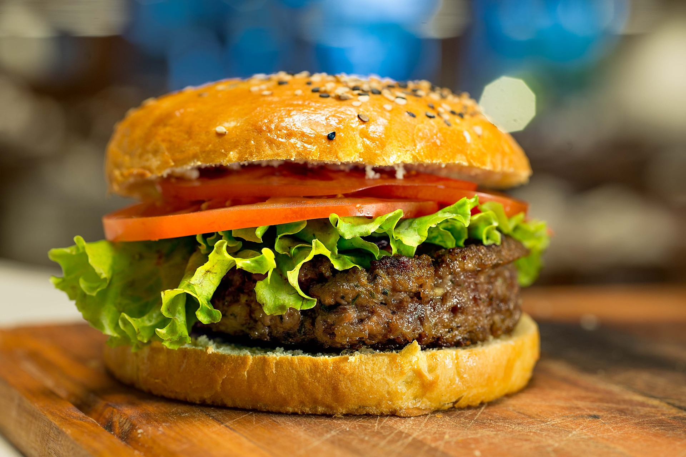

Beherrsche die Kochkunst mit unseren einfachen Rezepten und Küchentipps
Rezepte erkunden
Amerikanisch
Saftiger Burger mit premium Zutaten und hausgemachten Saucen
Dessert
Weiche und knusprige Cookies mit reichlich Schokoladenstückchen
Indisch
Würziges und geschmackvolles indisches Curry mit zartem Hähnchen